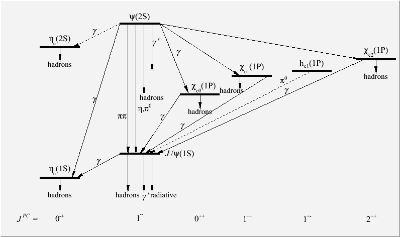

Tutorials
- New tutorial $ROOTSYS/tutorials/graphics/mass_spectrum.C. It
produces the following output:

- New tutorial $ROOTSYS/math/goftest.C showing the example
usage of the new ROOT::Math::GoFTest class.
- New tutorial $ROOTSYS/math/multiDimSampling.C showing the example
usage of the new ROOT::Math::DistSampler interface for
random generation from arbitrary functions using Unuran or Foam.
- New tutorial $ROOTSYS/math/kdTreeBinning.C showing the example
usage of the new TKDTreeBinning class.
- New tutorial $ROOTSYS/fit/NumericalMinimization.C showing
a minimization example (Rosenbrock function) using the
ROOT::Math::Minimizer interface.
- New tutorial $ROOTSYS/fit/exampleFit3D.C showing
a simple fit example of 3D points with a 3D function.
- New tutorial $ROOTSYS/fit/TSVDUnfoldExample.C showing
an example of the new TSVDUnfold class.
- New Roostats tutorials:
- New Demos that take name for file, workspace, modelconfig, and data, then use the corresponding calculator tool. If the file is not specified it will read an file produced from running the HistFactory tutorial example.
- StandardProfileLikelihoodDemo.C:
- StandardFeldmanCousinsDemo.C:
- StandardBayesianMCMCDemo.C:
- StandardBayesianNumericalDemo.C:
- StandardProfileInspectorDemo.C:
- Demonstrate some new PDFs
- TestNonCentral.C: demonstrates non central chi-square
- JeffreysPriorDemo.C: demonstrates Jeffreys Prior
- Instructional Examples
- IntervalExamples.C: Standard Gaussian with known answer using 4 techniques
- FourBinInstructional.C: Example of a standard data-driven approach for estimating backgrounds. A lot of discussion.
- HybridInstructional.C: Example of protoype on/off problem with a data-driven background estimate. A lot of discussion
- HybridStandardForm.C: Variant on above in 'standard form'
- MultivariateGaussianTest.C: A validation example with an N-D multivariate Gaussian
- Renamed the rs201_hybridcalculator.C to
HybridOriginalDemo.C
- Removed some obsolete roostats tutorials (all the rs500 types)